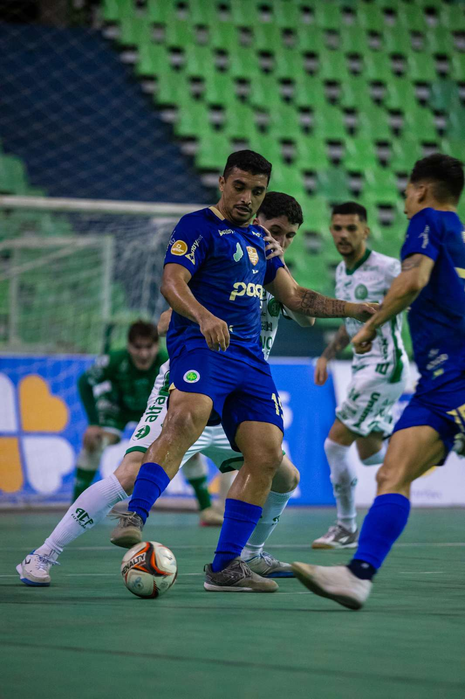
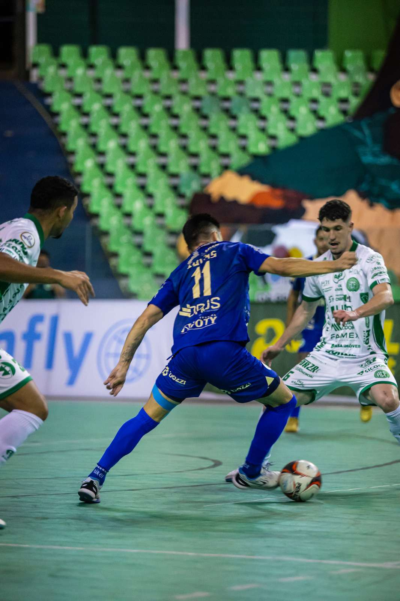
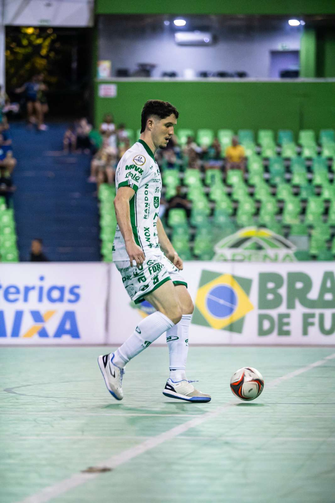

Mesmo atuando com uma formação mesclada, inclusive tendo atletas das categorias sub-20 e sub-17, a Prefeitura de Chapecó/Chapecoense/Unochapecó lutou até o fim e vendeu caro o revés por 4 a 3 para o Atlético-PI. O confronto ocorreu na noite desta quinta-feira (17), na Arena Verdão, em Teresina (PI), válido pela sétima rodada do Campeonato Brasileiro de Futsal. O adversário é o atual campeão da competição e conquistou o título da Taça Brasil no último domingo (13).

A decisão de mandar uma equipe com vários jovens da base para o Nordeste ocorreu porque a maioria dos atletas do grupo adulto permaneceu no Oeste catarinense, para disputar a fase regional dos Jogos Abertos de Santa Catarina (JASC). Sob o comando do auxiliar e treinador da base, Leandro Luciano, o Verdão das Quadras demonstrou poder de reação durante os dois períodos.
O primeiro tempo terminou com vitória parcial dos donos da casa por 2 a 1. Fernandinho abriu o placar para o Atlético-PI aos 12'28" e Gugu Flores ampliou aos 15'12". A Chapecoense diminuiu a desvantagem com Vini Lima, aos 18'28".

A segunda etapa começou movimentada e o Verdão buscou o empate aos 0'55", com gol de Toninho. O time piauiense voltou a abrir vantagem com gols de Gugu Flores, a 1'45", e Fernandinho, aos 3'02". Sem desistir da partida, os visitantes encostaram novamente no placar com mais um gol de Toninho, aos 13'48", e manteve a pressão em busca do empate até o apito final.

A Chape Futsal continua na sétima colocação com 9 pontos, dentro do G8, a zona de classificação para o mata-mata. O Verdão das Quadras encerra a primeira fase com duas partidas seguidas em casa no início de outubro: contra o Magé (RJ), no dia 3, às 16h, e diante do Fazenda (PR), no dia 10, às 19h. Os duelos serão no ginásio do SESC, em Chapecó.
Crédito das fotos: Chape Futsal